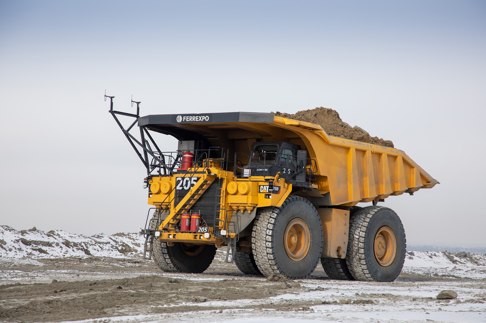
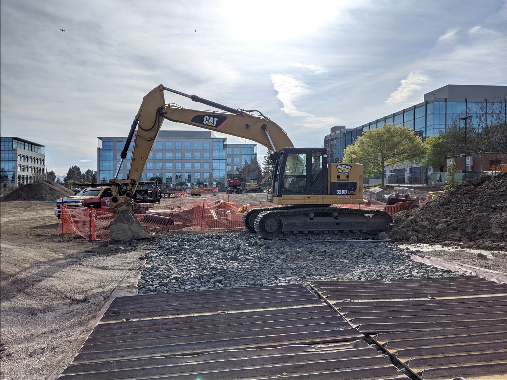

Executive Summary
Speaking at a fireside chat at the Ai4 conference in Las Vegas in August, Caterpillar CTO Jaime Mineart said the hard part of autonomy and physical AI is incorporating the technology into the customer jobsite and into the workflows. TechCrunch reported the remarks on August 30.
This is not the complaint of a company that lacks the raw material. Caterpillar has about 1.6 million connected assets around the world and more than 16 petabytes of structured data drawn from them, plus years of experience taking crews out of mines. A company with no obvious gap on the asset side pointed at the jobsite as the difficult part.
The budget it disclosed next points to the same place. Over the next five years it plans to spend $100 million training its 118,000 employees in AI, autonomy, and robotics. This piece looks at what those numbers say to people who work with data.
Key Figures
The first three values are ones the company disclosed. The last is two of them divided.
Sources: TechCrunch, Caterpillar is bringing to AI deployment what it learned from automating mining (2026-08-30) · Caterpillar, Cat AI Assistant announcement (2026-01-06)
1.6 million
Connected assets worldwide
From automated haul trucks to underground loaders, the machines that send their operating records back
16 PB
Structured data accumulated
The same figure appeared in January as the volume the Helios platform manages
$100 million
Five-year workforce training budget
To teach AI, autonomy, and robotics to 118,000 employees
$847
Five-year budget per person
$100 million divided by 118,000 people, or roughly $170 a year
From the Mine to the Jobsite
The TechCrunch piece opens on a problem nearly every company trying to deploy AI runs into, which is that the technology is hard to integrate into everyday operations. Caterpillar has spent decades dealing with a version of that problem in the physical world, and it is now using that experience to deploy AI.
Its move into autonomy started with mining, and the reasons TechCrunch gives are labor shortages and hazardous conditions. Where people are hard to hire and the work carries real risk, the case for running a machine without an operator in it is strongest. Today the company's catalog includes automated haul trucks, drilling, underground loaders, dozers, and remote-controlled construction equipment, along with a software command center, fleet management, and remote terrain intelligence.
What Mineart described at Ai4 was the step after that. "Now we're in this super exciting time where we can take all of that learning from mining and bring it into much more dynamic environments, jobsites, quarries, and construction sites," she said. The phrase worth holding onto is "much more dynamic." Same company, same machines, same autonomy stack, and yet changing the destination changes the difficulty. That judgment is carried in those four words.
The article does not break down the difference item by item, though picturing the two settings suggests where it lies. A mine has controlled access, and haul routes and task sequences tend to repeat. On a construction site the terrain shifts as the work progresses, and crews and equipment from several companies share the same ground. Move the same automated haul truck between them and the number of situations it can meet is not the same.

Sixteen Petabytes Is Not Training Data
The scale Mineart disclosed is about 1.6 million connected assets globally and more than 16 petabytes of structured data. That same figure of 16 petabytes surfaced once before, on the CES stage in January. Announcing Cat AI Assistant, Chief Digital Officer Ogi Redzic presented the Helios data platform, described in that statement as managing over 16 petabytes of data, as the company's digital foundation.
What gets done with that data is the question here. Cat AI Assistant lets a field technician standing next to a machine use voice commands to pull up repair procedures, troubleshoot potential problems, and identify parts that may be needed before beginning a repair. The January announcement is more specific. With a single voice command, and without interrupting the task at hand, it reaches the right section from a library of thousands of instruction manuals, then gives step-by-step guidance on repairs, highlights common issues, and suggests additional parts needed to complete the job. Those responses run on the NVIDIA Jetson Thor platform, which is to say on a device at the edge, where work is done.
Mineart said the tool is now being used by customers, operators, and technicians, which puts it past the demo stage. The January announcement adds that it operates against the entire Caterpillar knowledge base, unifying a scattered portfolio of digital applications and data into one simple, conversational experience. The place an answer gets assembled is that knowledge base, not the raw log.
Between the records a machine sends up and the answer a technician receives, one stretch remains. Sensor and operating logs mostly hold values like pressure, temperature, runtime, and error codes. An answer has to say which section of which manual covers this symptom on this machine, and which parts will be needed alongside it. Unless the logs have been tied to service documents, parts lists, and failure modes, 16 petabytes is a searchable record and not the material of an answer. Making that connection is work that, in this industry, still passes through human hands.
What Is Left Is the Customer Jobsite
The customer jobsite is not the only place this company puts AI to work. Mineart said Caterpillar also uses it to power software for scanning sites and generating digital twins in manufacturing to analyze operations. On its own software development, she was direct: "We use AI agents to modernize legacy code, generate and test new software, and identify defects earlier." That is the background against which the rest of her argument should be read, because the company is not saying deployment is hard for want of capability on the building side.
Mineart is quick to point out that building the technology is only part of the challenge, since deploying an autonomous machine is not the same as transforming a site to use AI. Companies also have to rethink how people work alongside the technology and how existing processes need to change.

"The hard part about autonomy and about physical AI is incorporating that technology into the customer jobsite and into the workflows."
Jaime Mineart, CTO, Caterpillar · TechCrunch (2026-08-30)
How wide the word workflows runs shows up in the three kinds of user the January announcement separates out. For business owners the tool is "an extra set of eyes" on their equipment, one that helps turn unplanned incidents into planned maintenance and evolves alongside their operations. For a technician it is a dependable partner that pulls the right section out of the manual library. For a machine operator it is "a coach in the cab," connecting every step of the workday from machine startup to shift handoff without the operator switching screens or returning to the yard. The answers come out of the same data, and the days of the three people change in three different ways.
The role the article singles out as changing is the operator's. As machines become more autonomous, some operators may shift from controlling a single machine to overseeing multiple machines from a remote command center. Judgment once made by hand in the cab becomes judgment made while watching several screens. Qualification requirements, training programs, and staffing have to move with it. When people say the difficulty of deploying a technology sits with the organization rather than with model performance, this is the scene they mean.
$100 Million, Five Years, 118,000 People
Asked how the AI systems get trained, Mineart pointed to experienced operators, saying the company leans on institutional knowledge built over decades. The sentence is short and heavy on the data side. Which sound means suspect the bearing, which gauge reading means stop the job, lives in someone's head rather than in a database. Getting that judgment out and into a record costs the time of the people who hold it.
Which is why the next task the company named is training. It plans to spend $100 million over the next five years to retrain its 118,000 employees in AI, autonomy, and robotics. Divide $100 million by 118,000 and the figure is $847 per person over five years, roughly $170 a year. On size alone this is hard to call a large program. What stands out is not the size but the reach. The target is not the autonomy group or the data team but the whole workforce.
The reach follows from the previous section. Moving field judgment into data, and then putting the resulting tool back to use in the field, are both jobs that do not finish inside one department. The people who know a service procedure, the people who write it down, and the people who catch a wrong answer are all out where the work is. In a company saying it will retrain its people rather than buy more models, the allocation shows where it thinks the bottleneck sits.
The backdrop the company gave for the tool points the same way. The January announcement described industries facing talent and skills gaps and customers managing increasing jobsite complexity. Against that, the use it claimed for Cat AI Assistant was helping a less experienced operator improve productivity. A tool built to cover for missing people and a budget for retraining people are two sides of one problem.
One allocation is thin ground for a conclusion. The training budget is one of several disclosed line items, and what the company spends on models and infrastructure was not broken out. As financial background, Caterpillar's quarterly revenue reached an all-time high of $20.5 billion in the second quarter, helped by strong demand for power-generation equipment used in data centers, and CEO Joe Creed said that "no one is slowing down" when it comes to demand for cloud computing and generative AI infrastructure. Money is not the reason training was the pick.
Three coordinates come out of this. The assets are already there, the hard part is fitting them into the workflows on a customer site, and the first budget aimed at that went to people. Anyone who works with data will recognize the order. Choosing a model takes weeks. Getting field records into a shape that can be learned from has always taken longer than that.
Editor's Note
Three questions come up every time Pebblous talks about physical AI. Are the records coming off the field in a shape that can be learned from, is ownership and permitted use of those records written into the contract, and does the judgment of skilled workers survive as labels. The order Caterpillar laid out here shows that those questions stay open even for a company with a great deal of equipment.